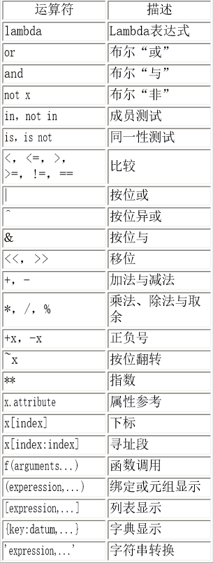

本篇将介绍Python语言第4章——运算符与表达式
你编写的大多数语句（逻辑行）都包含表达式。一个简单的表达式例子如2 + 3。一个表达式可 以分解为运算符和操作数。运算符的功能是完成某件事，它们由如+这样的符号或者其他特定的关键字表示。运算符需要数据来进行运算，这样的数据被称为操作数。在这个例子中，2和3是操作数。
你可以交互地使用解释器来计算例子中给出的表达式。例如，为了测试表达式2 + 3，使 用交互式的带提示符的Python解释器：
>>> 2 + 3 5>>> 3 * 5 15 表4.1 运算符与它们的用法
如果你有一个如2 + 3 * 4那样的表达式，是先做加法呢，还是先做乘法？我们的中学数学告诉 我们应当先做乘法——这意味着乘法运算符的优先级高于加法运算符。
下面这个表给出Python的运算符优先级，从最低的优先级（最松散地结合）到最高的优先级 （最紧密地结合）。这意味着在一个表达式中，Python会首先计算表中较下面的运算符，然后 在计算列在表上部的运算符。
下面这张表（与Python参考手册中的那个表一模一样）已经顾及了完整的需要。事实上，我建 议你使用圆括号来分组运算符和操作数，以便能够明确地指出运算的先后顺序，使程序尽可能 地易读。例如，2 + (3 * 4)显然比2 + 3 * 4清晰。与此同时，圆括号也应该正确使用，而不应该 用得过滥（比如2 + (3 + 4)）。
表4.2 运算符优先级
其中我们还没有接触过的运算符将在后面的章节中介绍。 在表中列在同一行的运算符具有 相同优先级 。例如，+和-有相同的优先级。
默认地，运算符优先级表决定了哪个运算符在别的运算符之前计算。然而，如果你想要改变它 们的计算顺序，你得使用圆括号。例如，你想要在一个表达式中让加法在乘法之前计算，那么 你就得写成类似(2 + 3) * 4的样子。
结合规律：运算符通常由左向右结合，即具有相同优先级的运算符按照从左向右的顺序计算。例如，2 + 3 + 4被计算成(2 + 3) + 4。一些如赋值运算符那样的运算符是由右向左结合的，即a = b = c被处理为a = (b = c)。
使用表达式
length = 5 breadth = 2 area = length * breadth print 'Area is', area print 'Perimeter is', 2 * (length + breadth) 输出
$ python expression.py Area is 10 Perimeter is 14 矩形的长度与宽度存储在以它们命名的变量中。我们借助表达式使用它们计算矩形的面积和边 长。我们表达式length * breadth的结果存储在变量area中，然后用print语句打印。在另一个打印 语句中，我们直接使用表达式2 * (length + breadth)的值。
另外，注意Python如何打印“漂亮的”输出。尽管我们没有在'Area is'和变量area之间指定空 格，Python自动在那里放了一个空格，这样我们就可以得到一个清晰漂亮的输出，而程序也变 得更加易读（因为我们不需要担心输出之间的空格问题）。这是Python如何使程序员的生活变 得更加轻松的一个例子。